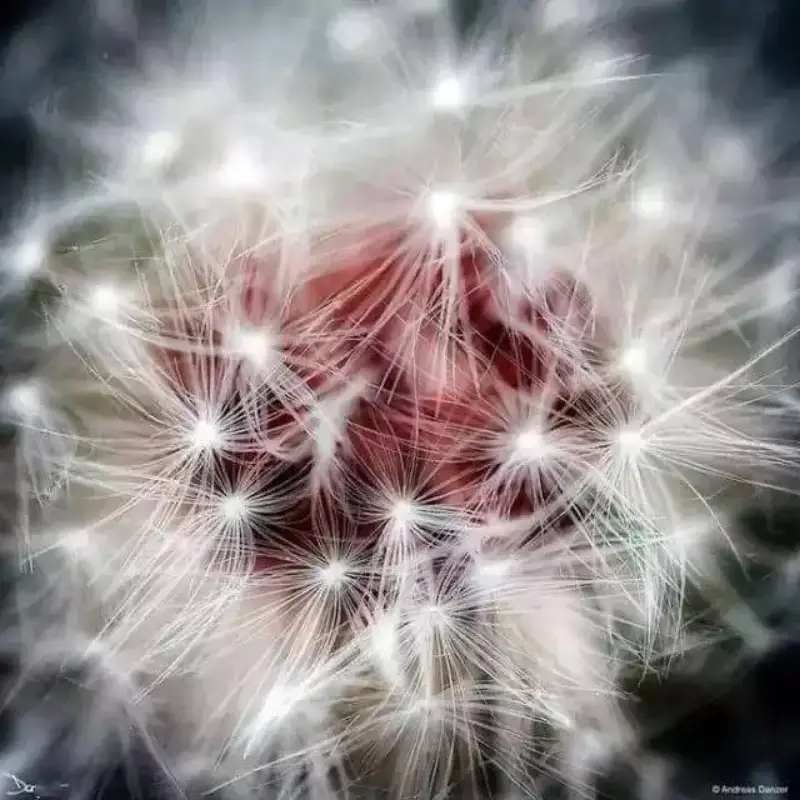
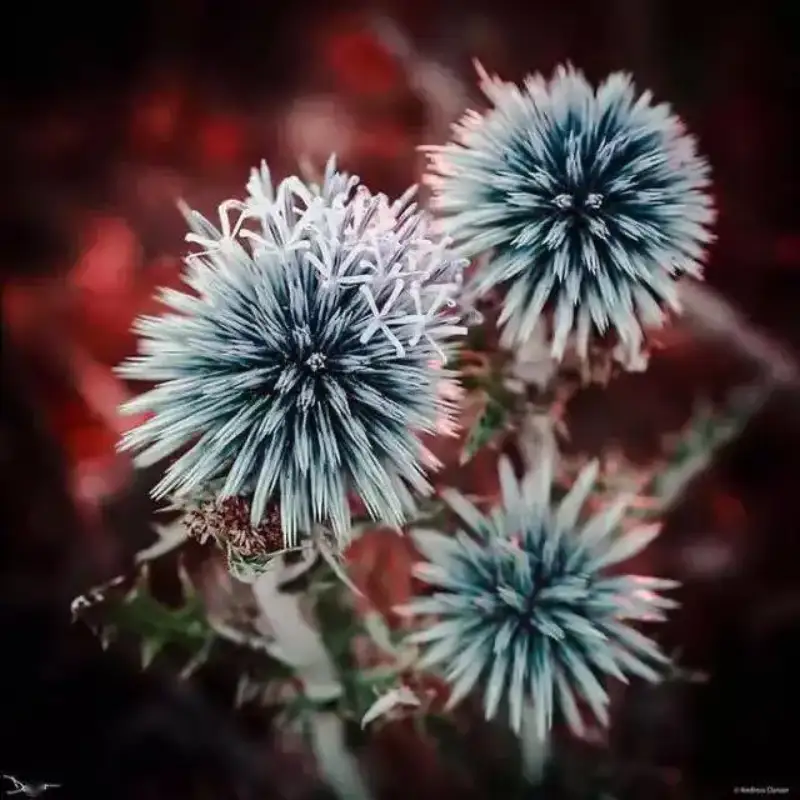
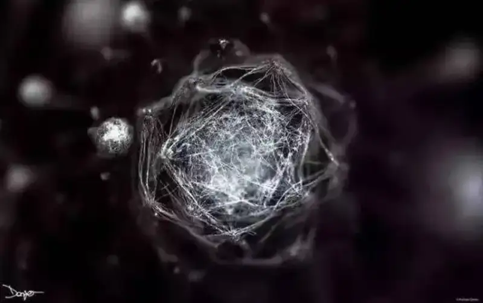
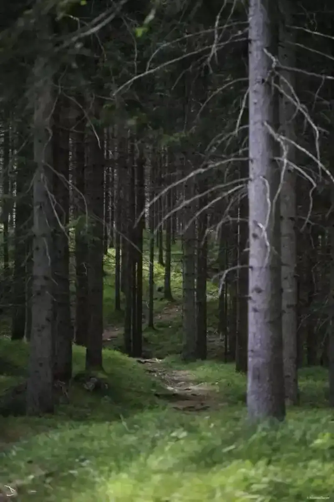
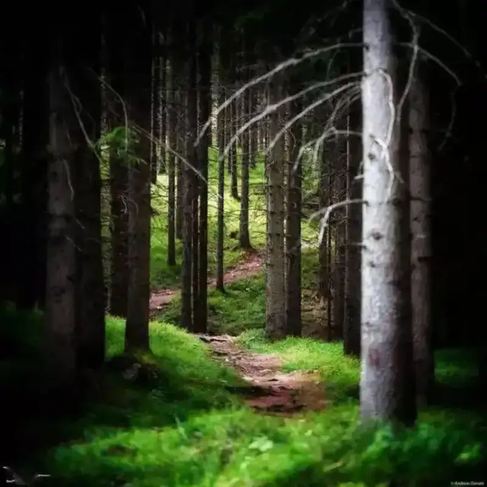
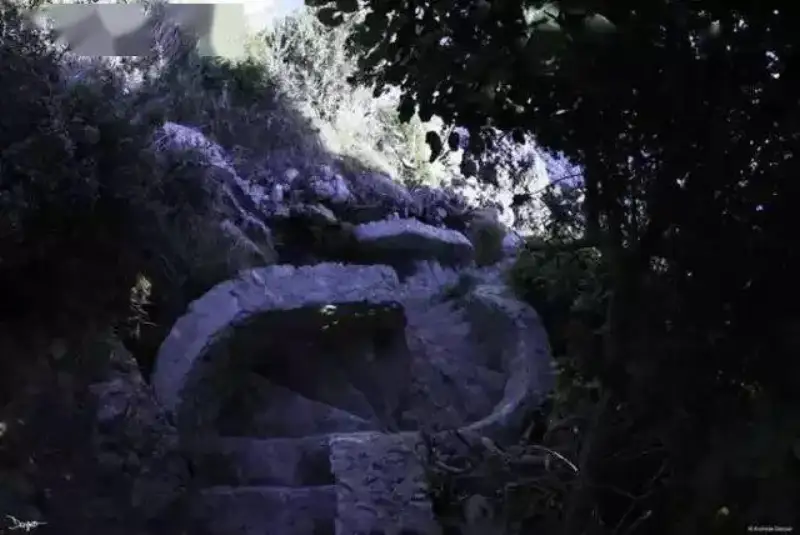
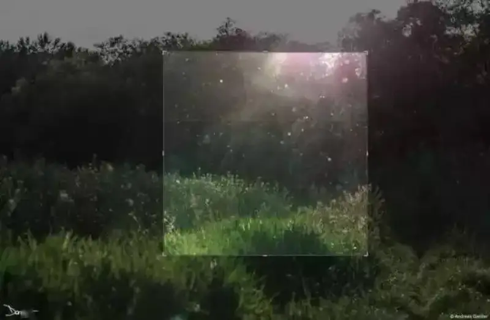
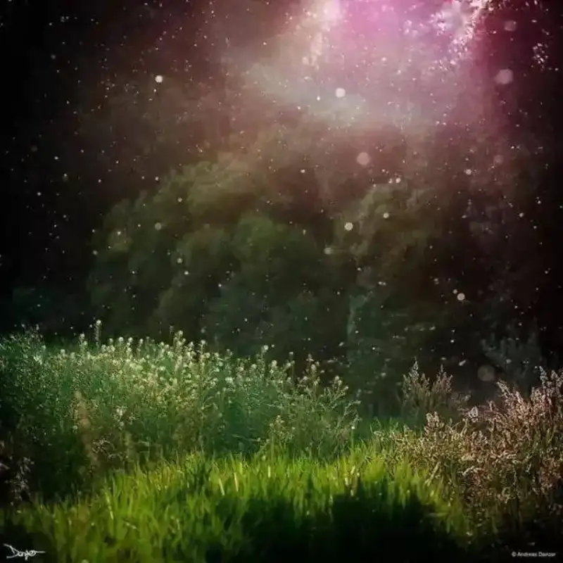

Post-processing is part of photographic creation, and we should treat it the same way. Through these 18 images, I hope you will see how important post-processing is to your work.
01. The possibilities of RAW
Shooting RAW leaves more room for post-processing.
Use Lightroom for the broad adjustments.
Import into Photoshop for fine tuning.
02. Change the tone
This is a very ordinary dandelion close-up.
After sharpening, changing the central tone, and raising contrast

03. Add saturation
The original already looks good, but the highlights blow out and lose detail.
Adjust the saturation a little, and sharpen to restore detail. Sometimes a simple adjustment gives a great result.
04. Use cropping
This is an ordinary plant portrait.
Sometimes a shot of a plant alone is flat. Then cropping the frame so the subject fills it works better.

05. Recompose
A very classic rule-of-thirds layout, solid but unremarkable. With a 3:2 frame it is far too ordinary.
Crop to a wide frame. The dark parts of the woods have no detail, so leaving them out does little harm.
06. Convert to black and white
The original color is not great. You can adjust the tone with the methods above, or just remove the color.
As black and white, the distraction of color drops away, and the viewer focuses more on the relation of points, lines, and planes in the frame.

07. Change the aspect ratio
A 3:2 vertical frame is very common.

Crop to square, add an HDR effect, and focus the reader's eye.

08. Raise contrast
When you shoot in strong sunlight, or use an inexpensive lens, the color contrast is often too low.
Rather than spend a lot on new gear, recovering the shot in post is a good option.
09. Change the color temperature
For images that need a mood, color temperature is a key factor.
Warm tones suit autumn, and cool tones suit winter.
10. Improve exposure
Sometimes the light range in the frame is large, and the camera lacks dynamic range. To avoid blown highlights and lost detail, you have to underexpose.
Use post-processing to adjust the brightness of areas and rescue the shadows.
11. Rescue backlit shots
This is also an exposure problem, and it is especially serious when you shoot backlit, often with large underexposed areas.
If you are not deliberately making a silhouette, you can also use post to recover shadow exposure as much as possible, and adjust tone and vibrance.
12. Strengthen contrast
When you shoot a silhouette, the relation of light and dark is important. An overall dull, gray style is a big mistake.
Adjust the brightness and color of the background in post, and strengthen the contrast with the silhouette for a better result.
13. Correct white balance
If you forget to correct the camera's white balance when shooting, the result suffers.

But because you used RAW, and post software is powerful, you can correct white balance easily.
14. Reset the visual center
Some frames have too many messy elements and no clear visual center, so you need to crop.
Set the frame to square, crop it, and turn the sunlight golden, which strengthens the mood and the impact.
15. Treat a hopeless case as salvageable
Some photos are poor: the content is plain, the result is weak, and they seem ready to be discarded.
Since there is no pressure or requirement, we can let our imagination run free.
16. Rescue night scenes
Poor light causes the most trouble.
Post-processing is the best way to fix it.
17. Special effects
Some simple photos
look different when you see them from another angle.
You can even flip them upside down.
18. Recreate
We can also treat a photo as raw material.
Post-processing recombines this raw material.

Add some new effects and adjustments, and complete an incredible work.
